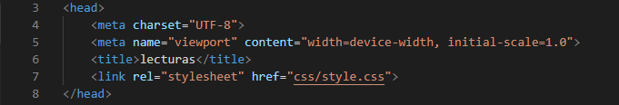
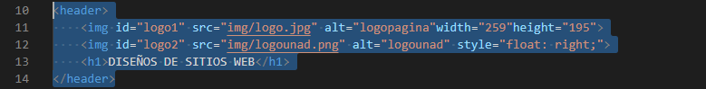
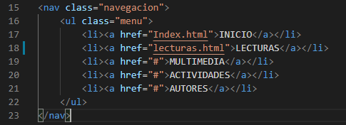
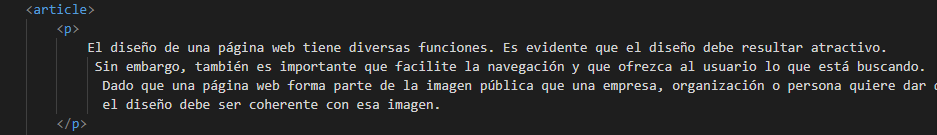
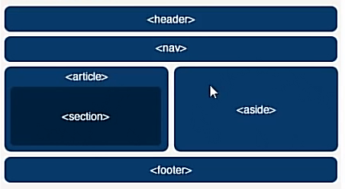
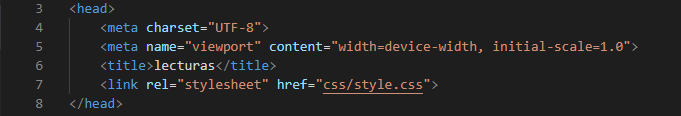
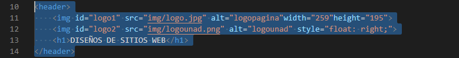
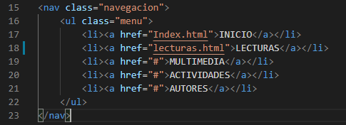
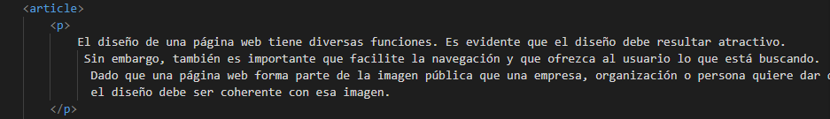
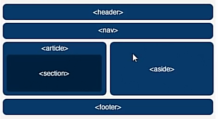

El diseño de una página web tiene diversas funciones. Es evidente que el diseño debe resultar atractivo.
Sin embargo, también es importante que facilite la navegación y que ofrezca al usuario lo que está buscando.
Dado que una página web forma parte de la imagen pública que una empresa, organización o persona quiere dar de sí,
el diseño debe ser coherente con esa imagen.
¿Qué es GitHub y para qué se utiliza?
GitHub es un sistema de gestión de proyectos y control de versiones de código,
así como una plataforma de red social diseñada para desarrolladores.
¿Pero para qué se usa GitHub? Bueno, en general, permite trabajar en colaboración con otras
personas de todo el mundo, planificar proyectos y realizar un seguimiento del trabajo.
GitHub es también uno de los repositorios online más grandes de trabajo colaborativo en todo el mundo.
¿Qué es Git?
Antes de continuar, debemos entender a Git como el corazón de GitHub.
Git es un sistema de control de versiones desarrollado por Linus Torvalds
(el hombre que creó Linux).
¿Qué es un sistema de control de versiones?
Cuando los desarrolladores hacen un nuevo proyecto, siempre continúan haciéndole modificaciones
al código. Incluso después de la puesta en marcha de los proyectos, todavía necesitan actualizar
las versiones, corregir errores, agregar nuevas funciones, etc.
El sistema de control de versiones ayuda a registrar los cambios realizados al código.
Aún más, registra quién realizó los cambios y puede restaurar el código borrado o modificado.
No hay códigos sobrescritos ya que Git guarda varias copias en el repositorio.
Si estás interesado en Git,puedes aprender más sobre Git aquí.
¿Qué es Hub?
Si Git es el corazón de GitHub, entonces Hub es su alma. El hub de GitHub es lo que convierte una
línea de comandos, como Git, en la red social más grande para desarrolladores.
Además de contribuir a un determinado proyecto, GitHub le permite a los usuarios socializar con
personas de ideas afines. Puedes seguir a las personas y ver qué hacen o con quién se conectan.
HTML5
HTML 5, es la ultima version de html, pero realmente contiene nuevos elementos,
atributos y cmportamientos. contiene un conjunto mas amplio de tecnologias que permite
a los sitios web y a las aplicaciones ser mas diversas y de gran alcance.
Permite describir con mayor precision en su contenido, tambien permite comunicarse con el servidor
de formas nuevas e innovadoras, y lo mejor es que permite a las paginas web almacenar datos localmente
en el lado del cliente y operar sin conexion de manera mas eficiente. Realmente otorga una mayor
optimizacion de la velocidad y un mejor uso del hardware.
Estructura basica de html5
Para empezar una pagina en html5 lo primero de debemos realizar es definir el DOCTYPE
y posteriormente asignar el idioma en el que va a estar nuestra pagina, esto lo conseguimos
con la etiqueta html y el atributo lang.
 De esta forma indicaremos que nuestra pagina esta escrita en html5
y que el idioma de su contenido es español.Luego va la etiqueta HEAD, en esta agregaremos la
etiqueta meta para designar el coddificado de nuestra pagina, la cual pondremos UTF-8 esto con
el fin de que nos acepte la "Ñ" y otros acentos del español, dentro del head tambien va la etiqueta tittle, esta designa el titulo que saldra en la pestana superior
del navegador y la etiqueta link, mediante la cual asociamos nuestros estilos creados en css a nuestro
documento html5.Con esto ya terminariamos la parte no visible de nuestro sitio,

lo siguiente es definir
la etiqueta BODY, dentro de esta lo primero es el HEADER, esta define la cabecera de nuestra pagina, por
lo general aqui tenemos el logo y nombre de nuestro sitio o en su defecto un baner. Dentro del header
podremos colocar cualquier eqitqetas h, p, figure, etc. Pero lo mas recomendable
es usar solo la etiqueta h.

A continuacion del header tenemos la etiqueta nav; la cual identifica la barra de navegacion de
nuestro sitio web, esta contiene por lo general las etiquetas ul, lo y li para crear listas y
asi obterner menus desplegables.

Luego tendriamos la etiqueta section, dentro de esta podremos definir etiquetas h, p, figure.
Aunque lo ideal es definir dentro de nuestra etiqueta section una etiqueta article o articulo
y entro de esta empezar a trabajar todo nuestro contenido.

Por ultimo tendriamos las etiquetas ASIDE y FOOTER, con aside crearemos una barra lateral
y con el footer podremos crear el pie de pagina de nuestro sitio web.

De esta forma indicaremos que nuestra pagina esta escrita en html5
y que el idioma de su contenido es español.Luego va la etiqueta HEAD, en esta agregaremos la
etiqueta meta para designar el coddificado de nuestra pagina, la cual pondremos UTF-8 esto con
el fin de que nos acepte la "Ñ" y otros acentos del español, dentro del head tambien va la etiqueta tittle, esta designa el titulo que saldra en la pestana superior
del navegador y la etiqueta link, mediante la cual asociamos nuestros estilos creados en css a nuestro
documento html5.Con esto ya terminariamos la parte no visible de nuestro sitio,

lo siguiente es definir
la etiqueta BODY, dentro de esta lo primero es el HEADER, esta define la cabecera de nuestra pagina, por
lo general aqui tenemos el logo y nombre de nuestro sitio o en su defecto un baner. Dentro del header
podremos colocar cualquier eqitqetas h, p, figure, etc. Pero lo mas recomendable
es usar solo la etiqueta h.

A continuacion del header tenemos la etiqueta nav; la cual identifica la barra de navegacion de
nuestro sitio web, esta contiene por lo general las etiquetas ul, lo y li para crear listas y
asi obterner menus desplegables.

Luego tendriamos la etiqueta section, dentro de esta podremos definir etiquetas h, p, figure.
Aunque lo ideal es definir dentro de nuestra etiqueta section una etiqueta article o articulo
y entro de esta empezar a trabajar todo nuestro contenido.

Por ultimo tendriamos las etiquetas ASIDE y FOOTER, con aside crearemos una barra lateral
y con el footer podremos crear el pie de pagina de nuestro sitio web.

¿ que es CSS3 ?
CSS, siglas en ingles para Hoja de estilos en cascada es un lenguaje utilizado, para especificar
el aspecto de una pagina web para diferentes dispositivos. Realmente, el HTML le dice al navegador
la estructura de un documento, mientras que el CSS le dice como renderizarlo. CSS3 añade muchas
capacidades nuevas a la especificacion anterior. auqnue aun esta en proceso de estandarizado.
Los procesos que otorga CSS3 son excelentes bordes,fondos, color, textos, transformaciones,
transiciones,cajas, contenido, opacidad. son elementos esencial para el diseño y su estructua
para cualquier web. El nombre de hojas de estilo en cascada se debe a que los estilos
aplicados se heredan de forma Jerarquica, es decir que si aplicamos un font-size:10px;
a la etiqueta body, todos los elementos de texto de nuestra pagina tendran
este tamaño de letra a menos que les especifiquemos otro tamaño.
Maquetación basica
Width: Especifica el ancho que debe tener un elemento.
Height: Especifica el alto que debe tener un elemento.
Margin: Especifica el espacio de separacion que toma el elemento por separado arriba, abajo, izquierda y derecha.
Padding: Especifica un margen interno de un objeto se especifica por separado arriba, abajo, izquierda y derecha.
Texto y fuentes
Font-family: Permite especificar el tipo de letra a usar.
Font-size: Permite especificar el tamaño de la letra
Font-style: Permite elejir el estilo de letra (normal, cursiva, etc.)
text-decoration: Permite dar decoracion al texto como subrayado, tachado, linea superior, etc.
Text-align: Permite centrar, justificar, alinear a la izquierda y derecha el texto
Color y fondo
Color: da color al elemento, este color se puede indicar mediante palabras, combinacion rgb y valores hexadecimales.
Backgroud-color: este color se puede indicar mediante palabras, combinacion rgb y valores hexadecimales.
Backgroud-image: Permite definir una imagen como fondo del elemento
Background-repeat: Permite determinar como se adapta la imagen de fondo con respecto al tamaño del elemento
box-shadow: Permite dar una sombra al elemento, esta sombra puede ser interna y externa.
Listas
List-style-image: Permite elegir una imagen como viñeta a una lista
List-style-type: Permite elegir el tipo de viñeta que usara una lista (circulo, cuadrado, etc.
Bordes
border: Anade un borde al elemento
border-color: Permte definir el color del borde
border-style: Permite definir el estilo del borde(solido, punteado, etc.
border-radius: Permite redondear las esquinas de un elemento